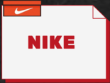

REGISTRAR
REGISTRAR
INICIAR SESION
HYPE_JDA
 Nike, Inc. Es una empresa multinacional estadounidense dedicada al diseño, desarrollo, fabricación y comercialización de calzado, ropa, equipo, accesorios
y otros artículos deportivos.La empresa fue fundada el 20 de enero de 1964 como Blue Ribbon Sports por Bill J. Bowerman y Philip H. Knight, y se convirtió oficialmente en Nike, Inc. el 30 de mayo de 1971. Nike comercializa sus productos bajo su propia marca, así como bajo Nike Golf, Nike Pro, Nike +, Air Jordan, Nike Skateboarding, Hurley International y Converse, entre otras.
En año 1984 los Chicago Bulls debutaba una joven promesa llamada Michael Jordan. Pronto, el jugador nacido en Nueva York en 1963 destacó dentro del primer equipo gracias a unas habilidades poco vistas en la historia de la NBA. Muy pronto, Nike, marca deportiva con una historia importante a sus espaldas,
puso su mirada en la nueva joya deportiva. Y vio en ella una oportunidad única para reinventar el marketing deportivo. Así fue como creó un calzado exclusivo (por primera vez en su historia) que tuviera a Jordan como figura principal.
Adidas es una multinacional alemana que diseña y fabrica calzado deportivo, ropa y accesorios. La compañía tiene su sede en Herzogenaurach, Baviera, Alemania. Es una marca registrada por el Grupo Adidas, el cual también posee
a la marca de ropa deportiva Reebok, la compañía de golf TaylorMade (incluyendo Ashworth), el nueve punto uno por ciento de FC Bayern Munich y la marca austriaca de redes sociales, Runtastic. Además de calzado deportivo, Adidas también hace otros productos como bolsos, camisetas, relojes, gafas y otros artículos relacionados con el deportes.
En 1906, un camarero y zapatero llamado William J. Riley lo hizo. Observando las patas con tres apoyos de los pollos, desarrolló un soporte en forma de arco que vendió por EE.UU. bajo el nombre de New Balance Arch. El invento consistía
en una almohadilla que se colocaba en la plantilla de las zapatillas, justo donde la planta del pie crea un arco, lo que las hacía más cómodas. Te sonará porque ahora lo incluyen infinidad de plantillas.
Converse Rubber Shoe Company fue creado por Marquis Mills Converse en 1908 en Malden Massachusetts. En 1917, la compañía creo el primer calzado llamado All Star compuesto únicamente de caucho y lona.
En su concepción fue diseñado para ser un calzado de élite en la liga profesional de baloncesto. En 1921, un jugador de baloncesto con el nombre de Charles “Chuck” Taylor se unió a un equipo de baloncesto patrocinado por la Sociedad Converse a la que llamaba Converse All Stars. Taylor recorrió los Estados Unidos impartiendo cursos de baloncesto en las escuelas secundarias y mientras enseñaba los fundamentos del juego, también promocionaba el calzado All Star Athletic Shoe. Como vendedor y como el atleta para de la empresa, Taylor también hizo mejoras en este estilo que tanto amaba. Sus ideas fueron implementadas para agregar una mayor flexibilidad y estabilidad; también incorporaron un parche para proteger el tobillo.